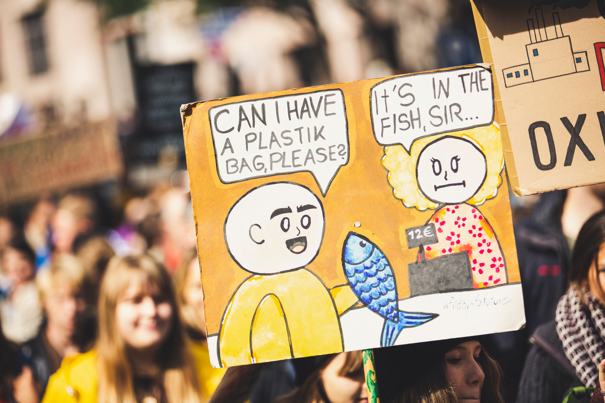

jQuery Traverse



FAQ about National Parks
- What is a National Park?
- an area set aside by a national government for the preservation of the natural environment
- What government agency oversees the National Park Service?
- The National Park Service is a bureau of the Department of the Interior. Directly overseeing its operation is the department's Assistant Secretary for Fish, Wildlife and Parks.
- How many employees are in the National Park Service?
- Permanent, temporary, and seasonal employees: Approximately 20,000 Volunteers: More than 279,000 in 2019
- How old is the National Park System?
- The National Park Service was created by an act signed by President Woodrow Wilson on August 25, 1916. Yellowstone National Park was established by an act signed by President Ulysses S. Grant on March 1, 1872, as the nation's first national park. View the National Park System timeline.
- What is the origin of the National Park Service arrowhead?
- The arrowhead was authorized as the official National Park Service emblem by the Secretary of the Interior on July 20, 1951. The components of the arrowhead may have been inspired by key attributes of the National Park System, with the sequoia tree and bison representing vegetation and wildlife, the mountains and water representing scenic and recreational values, and the arrowhead itself representing historical and archeological values. Read more about the history of the arrowhead and other elements of NPS visual design.
- How many areas are in the National Park System?
- The system includes 423 areas covering more than 85 million acres in every state, the District of Columbia, American Samoa, Guam, Puerto Rico, and the Virgin Islands. These areas include national parks, monuments, battlefields, military parks, historical parks, historic sites, lakeshores, seashores, recreation areas, scenic rivers and trails, and the White House. Learn more about national park designations. See the complete list of National Park Service units and related areas by type and number.
- What is the largest national park site? Smallest?
- Largest: Wrangell-St. Elias National Park and Preserve, AK, at 13.2 million acres Smallest: Thaddeus Kosciuszko National Memorial, PA, at 0.02 acres
- How many people visit the national parks?
- Total recreation visitors to the national parks in 2021: 297,115,406.
Yellowize LI
National Parks of US
- Arches
- Badlands
- Carlsbad Caverns
- Denali
State Parks of Texas
- Abilene
- Big Bend
- Choke Canyon
- Davis Mountains
State Park of Marvel
- Rogue
- Gambit
- Wolverine
- Phoenix